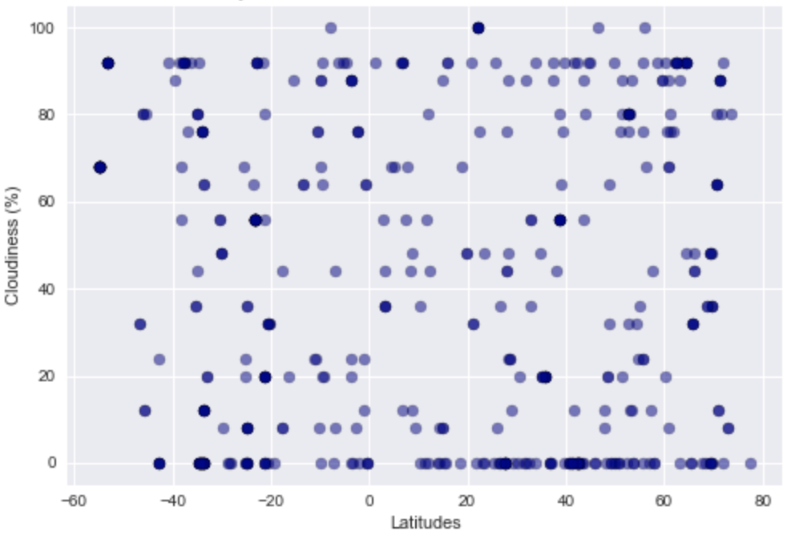

Latitude and Cloudiness Relation
From the scatter plot generated, we can relate to the fact that the temparature is gradually rising as we move towards the equator. Whereas, countries in the north and the once close to the pole are slightly colder almost throughout the year.
